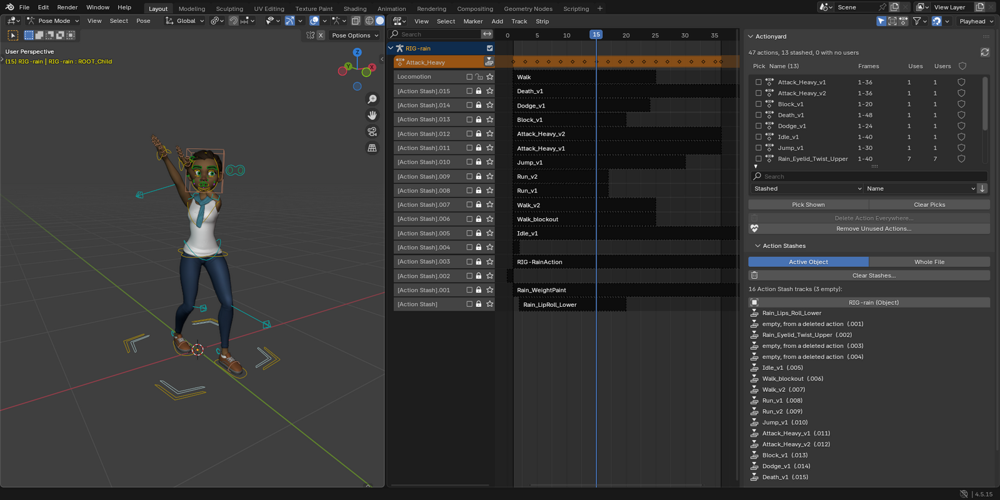
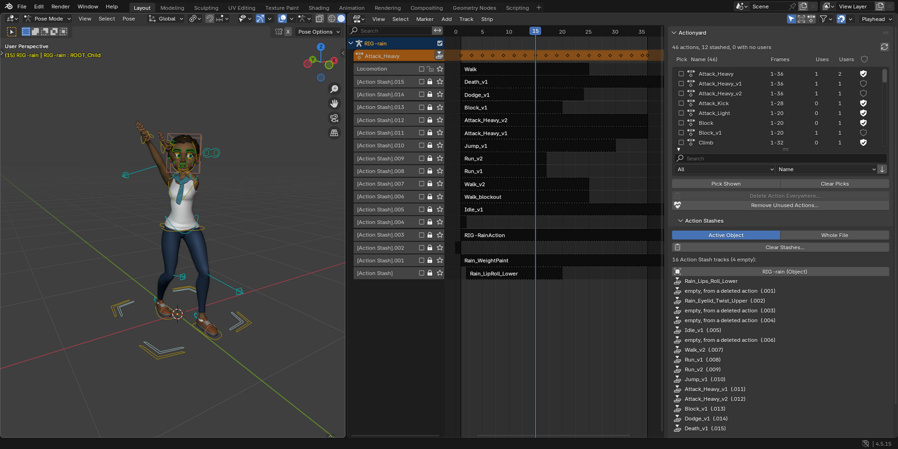
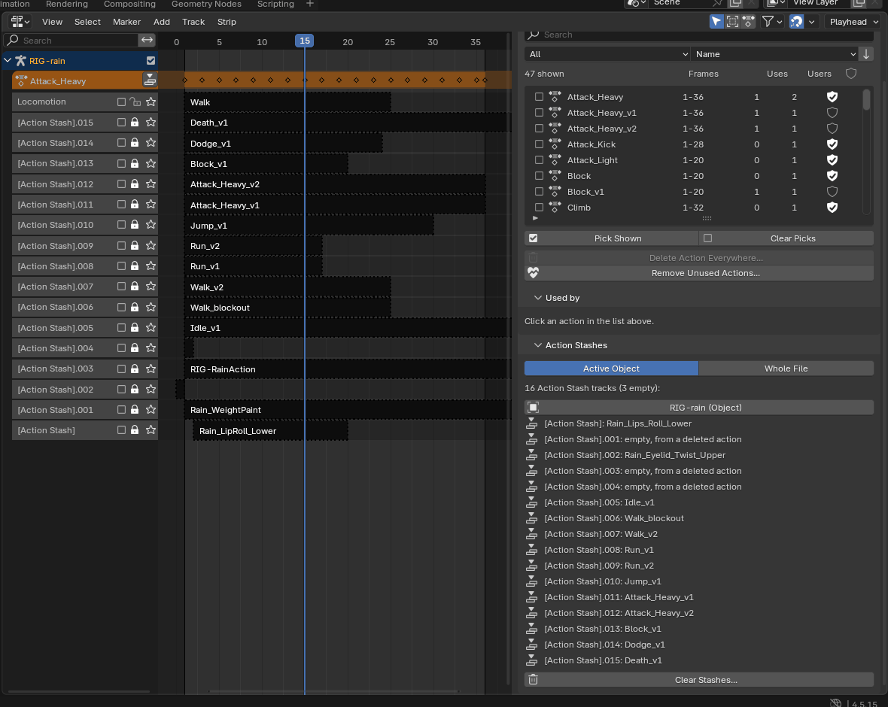

Actionyard for Blender
Every New Action leaves your old take on a muted [Action Stash] track in the NLA editor, and Purge won't remove them. Actionyard clears the ones you pick, previewed first, and shows every place each action is used.

$12 once, every future version included. Source included. Blender 4.4 and later.
Polar checkout · 14-day refund · no license check · tested on Blender 4.4, 4.5 LTS and 5.2 LTS on Linux; Windows and macOS not tested yet
- For you if one file holds many actions: a game move set, or takes made with New Action. Or you inherited a face rig and need to know which bones use an action before you delete it.
- Skip it if you have a few actions on one rig: Blender's Outliner and Purge already cover you. No onion skins or channel locking either.
1. Clear the stashes, and see every change first
Pick Active Object or Whole File and click Clear Stashes.... Before anything changes, every row says what will happen to it. Each take you free "will be kept" with a Fake User (Blender's shield toggle that keeps an unused action in the file), unless you untick it. Old takes you want gone for good: Keep None, tick Also delete these actions from the file, confirm. Only [Action Stash] tracks go; your other NLA tracks stay. One Ctrl+Z brings everything back.

2. Which bones use this action?
Click an action and Used by lists every place that uses it: an object's active action, an NLA track, an Action Stash, or an Action constraint with its bone, each with its slot (the part of an action meant for one object, since Blender 4.4). Hover a place for the track, strip, bone and constraint; click it to select that object.

3. Delete an action from everywhere at once
Tick actions in the Pick column (or click one) and choose Delete Action Everywhere.... The preview lists every place that will lose each action, in one list that scrolls, with the buttons on screen however many you pick. Then they go from all of those places and from the file in one undo step, with no empty stash tracks left behind. Remove Unused Actions... deletes what nothing uses, and keeps Fake User actions unless you tick them.

Watch it work
Why Purge doesn't help
A stashed action still has a user, so Purge leaves it. Deleting the stashed actions themselves is no better: Blender removes the actions and leaves every [Action Stash] track behind, holding a strip with no action. Measured on Rain's file in Blender 4.5.15, each row on a fresh copy:
| What you do | Actions left | Stash tracks left | Stash tracks with no action |
|---|---|---|---|
| Blender's Purge | 47 | 16 | 3 |
| Delete the 11 stashed takes in the Outliner, then Purge | 36 | 16 | 14 |
| Actionyard's Clear Stashes (Whole File, defaults), then Purge | 47 (the 11 takes kept with Fake User) | 0 | 0 |

Known limits
- No onion skins and no channel locking. No action switching, frame-range setting, export, NLA merging or baking.
- Linked data, and what a library override takes from its library, is read-only: it is shown with a lock and never changed. Stash tracks you added on an override in your own file can be cleared.
- An action with a strip on a locked NLA track is not deleted; unlock the track first. An object in NLA tweak mode keeps its stash tracks until you exit tweak mode (Tab). Both previews say so before you confirm.
- A strip inside a meta strip loses its action but stays in the meta strip; Blender's Python API cannot remove it.
- What counts as a stash is Blender's own rule: a track name containing "[Action Stash]". A track you named that way yourself counts too, so check the preview.
- The sidebar opens narrow: the list then shows Name, Uses and Fake User. Widen it for the Frames and Users columns. Very long names can still be cut; hover a row for the full name.
- Not tested yet: Windows, macOS, and overrides of overrides. English only.
Everything it does
Blender already lists every action with its user count (Outliner, Blender File mode), toggles Fake User, purges actions with no users, deletes a stash track by hand in the NLA editor (Nonlinear Animation editor), and remaps users (Action menu). With a few actions on one rig you don't need more. With many actions and stashes, Actionyard is one sidebar tab, in the NLA editor and the Dope Sheet (press N), that adds:
- One list of every action. Frame range, how many places use it, Blender's user count and a Fake User toggle. Under the list: search by name, show Stashed, No users, Fake User only or Used, and sort by name or by number of uses. A line above it counts the actions, the stashed ones and the ones with no users.
- Used by, as above, with shape keys and materials named by their object ("Kit_Head (shape keys)") and "(muted)" on a muted constraint.
- Clear Stashes, previewed. For the active object or the whole file. The tracks are grouped by object, each with its action first and the track's suffix after it. A take you already gave a Fake User reads "already has a Fake User; stays". A stash track you have unmuted, so it plays, reads "unmuted, plays; stays" and starts unticked. Every tick starts ticked each time the preview opens, also after Ctrl+Z. The action you clicked in the list stays clicked.
- Empty stash tracks. The tracks Blender leaves when a stashed action is deleted the plain way are listed as "empty, from a deleted action" and cleared with the rest.
- Delete Action Everywhere and Remove Unused Actions, as above. Pose-library assets are always kept. When nothing can be deleted, a popup says why, with no Delete or Remove button.
- Linked and overridden rigs. Everything a library override takes from its library file is locked. Stash tracks you added on the override in your own file are yours to clear, as in Blender's NLA editor.
- A written record. Every operation that changes the file says what it changed in the status bar and adds the details to a plain-text block, "Actionyard Report.txt", that opens on its newest section.
More captures on Rain's file




![Blender's File > Clean Up > Purge Unused Data dialog over Rain's viewport: Local Data-blocks: 1 Text; Linked Data-blocks: None. Beside it, her NLA editor with the column of 16 [Action Stash] tracks](img/rain-purge-dialog.png)


Install
- Download
actionyard-1.4.1.zip. Do not unzip it. - In Blender 4.4 or newer, open Edit > Preferences > Add-ons.
- Open the drop-down menu (⌄) at the top right, choose Install from Disk... and pick the zip. It is enabled straight away; its entry reads "Action Stash clean-up and action users, in the NLA sidebar (N)".
- In the NLA editor or the Dope Sheet, press N and open the Actionyard tab.
On the Add-ons page Blender asks nothing about internet access and shows no Repository Alert. The same Install from Disk is in Get Extensions too; there Blender may ask about internet access (Continue Offline is fine) and then show a red "Repository Alert" about its online catalogue, which you can ignore. The manual, README.md, is inside the zip; a one-page guide is online: Actionyard quick start.
Buying, licence and privacy
- Secure checkout by Polar, which delivers the zip; the zip includes the full source. No license check and no network access. If it doesn't work as described on your file and we can't fix it, email us within 14 days of purchase for a full refund (terms).
- $12 once. Every future version is included: no subscription, no renewal, no paid version 2.
- Requires Blender 4.4 or newer (slotted actions). Tested on Blender 4.4, 4.5 LTS and 5.2 LTS, on Linux, and checked in the real Blender 4.5 LTS and 5.2 LTS interface. Python only, with no compiled parts, but Windows and macOS have not been tested yet.
- GPL-3.0-or-later. Full source code included.
- Privacy: Actionyard makes no network calls and collects nothing: no telemetry, no analytics, no update checks. It changes only the open .blend file, and only when you run one of its operators.
- Questions or problems: support@ochrestack.com. A small .blend that shows the problem helps most.
How these images were made
The character is Rain, Blender Studio's free production rig (CC BY 4.0), in her own file as downloaded from studio.blender.org, with its 19 face actions and their Action constraints. Her file already holds 5 [Action Stash] tracks, 3 of them empty. We added a game move set keyed on her controls: 17 final actions, each kept with Fake User, and 11 older takes, each stashed with Blender's own Stash operator, as New Action does: 47 actions and 16 [Action Stash] tracks in all. For the override image, a new shot file links Rain from her downloaded file, makes her a library override and stashes four takes. Every image and GIF here is a capture of a real Blender 4.5.15 LTS window on Linux at 1920x960, with Actionyard 1.4.1 installed from its zip through Blender's extension installer; the phone close-up is the same dialog at UI scale 2. The mouse and keyboard input is scripted, and a check after every step compared the file's data with what the screen shows. 39 checks for the main captures and 11 for Used by and the Delete preview, all passed.
Words used on this page
- NLA: Blender's Nonlinear Animation editor, where an object's actions sit on tracks.
- Action Stash: a muted NLA track named "[Action Stash]" that keeps an action in the file. Blender's Stash operator makes one, and so does New Action for the previous take.
- Fake User: a flag (the shield icon) that keeps a data-block, such as an action, in the file when nothing else uses it.
- Slot: since Blender 4.4, one action can hold animation for several data-blocks, one slot each.
Character: Rain Rig (CC) Blender Foundation | studio.blender.org, used under CC BY 4.0. We added the game actions, the stashed takes and the shot file. Rain is not included with Actionyard.